토목산업기사 (2003-05-25 기출문제)
1과목: 응용역학
1. 아래 그림에서 P1 과 P2 의 크기는?
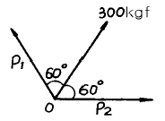
- P1 = P2 = 100 ㎏f
- P1 = P2 = 150 ㎏f
- P1 = P2 = 300 ㎏f
- P1 = P2 = 600 ㎏f
(정답률: 알수없음)

2. 그림과 같이 천정에 두끈을 매고 10kgf의 물체를 매달았을 때 두끈의 인장력 T1, T2의 합은?
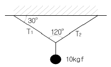
- 20kgf
- 11.55kgf
- 10kgf
- 17.32kgf
(정답률: 알수없음)
3. 다음 그림과 같이 직교좌표계 위에 있는 사다리꼴 도형 OABC 도심의 좌표는?
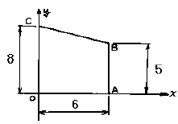
- (2.54, 3.46)
- (2.77, 3.31)
- (3.34, 3.21)
- (3.54, 2.74)
(정답률: 알수없음)
4. 지름 5㎝, 길이 200㎝의 강봉을 15mm만큼 늘어나게 하려면 얼마의 힘이 필요한가? (단, E = 2,100,000 kgf/㎝2)
- 3⑤ tonf
- 307 tonf
- 309 tonf
- 311 tonf
(정답률: 알수없음)
5. 다음 그림과 같이 인장력을 받는 막대에서 최대 전단력을 갖는 경사면 θ 와 그 크기는? (단, σ 는 X 단면에서의 수직응력이다.)
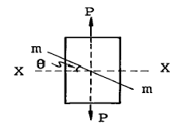
- 15° 에서 σ
- 30° 에서 σ/4
- 45° 에서 σ/2
- 60° 에서 σ/3
(정답률: 알수없음)
6. 다음 그림에서 연행 하중으로 인한 최대 반력 RA 는?
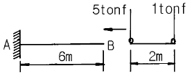
- 6 tonf
- 5 tonf
- 3 tonf
- 1 tonf
(정답률: 알수없음)
7. 그림과 같은 게르버보의 A점의 휨모멘트는?
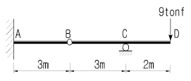
- 72 tonf·m
- 36 tonf·m
- 27 tonf·m
- 18 tonf·m
(정답률: 알수없음)
8. Euler 공식을 적용하는 일단 고정, 타단 활절인 장주에서 탄성계수 E = 210000 kgf/cm2, 단면폭 b =15 cm, 단면높이 h =30cm, 기둥길이 ℓ =18m 이다. 이때 최소 좌굴 하중 Pb 값은?
- 5.4 tonf
- 10.8 tonf
- 20.6 tonf
- 43.1 tonf
(정답률: 알수없음)
9. 그림과 같은 정정 아치(arch)의 지점 A의 수평반력은?
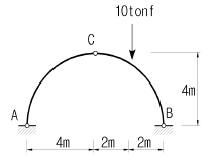
- 1 tonf
- 1.5 tonf
- 2 tonf
- 2.5 tonf
(정답률: 알수없음)
10. 에너지 불변의 법칙을 옳게 기술한 것은?
- 탄성체에 외력이 작용하면 이 탄성체에 생기는 외력의 일과 내력이 한 일의 크기는 같다.
- 탄성체에 외력이 작용하면 외력의 일과 내력이 한 일의 크기의 비가 일정하게 변화한다.
- 외력의 일과 내력의 일이 일으키는 휨모멘트의 값은 변하지 않는다.
- 외력과 내력에 의한 처짐비는 변하지 않는다.
(정답률: 알수없음)
11. 다음 단면에서 직사각형 단면의 최대 전단응력은 원형단면의 최대 전단응력의 몇배인가? (단, 두단면의 단면적과 작용하는 전단력의 크기는 같다.)
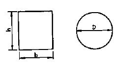
- 9/8 배
- 8/9 배
- 5/6 배
- 6/5 배
(정답률: 알수없음)
12. 다음 그림과 같은 트러스에서 DE부재의 부재력은?
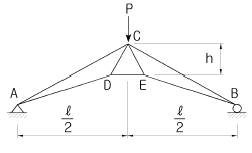
- Pℓ /4h
- 2Pℓ /3h
- Pℓ /2h
- 3Pℓ /4h
(정답률: 알수없음)
13. 등분포하중을 받는 직사각형단면의 단순보에서 최대처짐에 대한 설명으로 옳은 것은?
- 보의 폭에 정비례한다.
- 지간의 3제곱에 비례한다.
- 탄성계수에 반비례한다.
- 보의 높이의 2제곱에 반비례한다.
(정답률: 알수없음)
14. 다음 그림에 보이는 연속보의 중앙 지점에서의 휨모멘트를 구하면? (단, EI는 일정하다.)
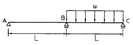
- -wL2 / 10
- -wL2 / 13
- -wL2 / 16
- -wL2 / 18
(정답률: 알수없음)
15. 경간 ℓ =8m, 단면 30 × 40cm 되는 단순보의 중앙에 10tonf 되는 집중하중이 작용할 때 최대 휨응력은?
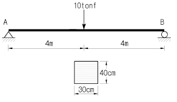
- 200 kgf/cm2
- 250 kgf/cm2
- 300 kgf/cm2
- 350 kgf/cm2
(정답률: 알수없음)
16. 다음 부정정보에서 지점B의 수직 반력은 얼마인가? (단, EI는 일정함)
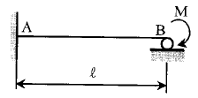
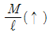
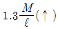
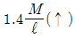
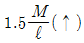
(정답률: 알수없음)
17. 다음 그림과 같은 도형의 x축에 대한 단면 2차모멘트는?
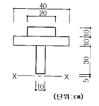
- 27,500cm4
- 144,200cm4
- 1,265,000cm4
- 1,287,500cm4
(정답률: 알수없음)
18. 캔틸레버보의 점 B 에 연직하중 P 가 작용 할 때 점 B 와 점 C 의 처짐각 θB와 θC의 비는?
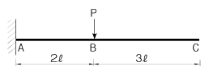
- 1 : 1
- 2 : 3
- 4 : 7
- 4 : 9
(정답률: 알수없음)
19. 그림과 같은 원통형 단면 기둥의 길이가 L=20m일 때 이 기둥의 세장비는?
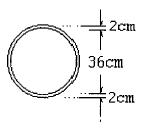
- 13.45
- 1.490
- 148.7
- 74.3
(정답률: 알수없음)
20. 단순지지 보의 B 지점에 우력 모멘트 Mo가 작용하고 있다. 이 우력 모멘트로 인한 A 지점의 처짐각 θa 를 구하면?
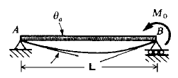
- θa = MoL / 3EＩ
- θa = MoL / 6EＩ
- θa = MoL / 9EＩ
- θa = MoL / 12EＩ
(정답률: 알수없음)
2과목: 측량학
21. 도로의 단곡선 계산에서 교점까지의 추가거리와 교각을 알고 있을 때 곡선시점의 위치를 구하기 위해서는 다음 요소 중 어느 것을 계산하여야 하는가?
- 접선장(T.L)
- 곡선장(C.L)
- 중앙종거(M)
- 접선에 대한 지거(Y)
(정답률: 알수없음)
22. 거리가 450m 인 두점 사이를 50m Tape를 사용하여 측정할 때 Tape 1회 측정의 정오차가 3㎜, 우연오차가 2㎜ 일 때 전 길이의 확률오차는?
- 27.66㎜
- 21.66㎜
- 17.66㎜
- 31.66㎜
(정답률: 알수없음)
23. 수준측량에서 경사거리 S, 연직각이 α 일 때 두 점간의 수평거리 D는?
- D = S sin α
- D = S cos α
- D = S tan α
- D = S cot α
(정답률: 알수없음)
24. 교점(I.P.)의 위치가 기점으로부터 143.25m 일 때 곡률반경 150m, 교각 58° 14′ 24″ 인 단곡선을 설치하고자 한다면 곡선시점의 위치는? (단, 중심말뚝 간격 20m)
- No.2 + 3.25
- No.2 + 19.69
- No.3 + 9.69
- No.4 + 3.56
(정답률: 알수없음)
25. 초점거리가 210mm 인 카메라로 표고 570m 의 지형을 1/25,000의 사진축척으로 촬영한 연직사진이 있다. 비행 고도는 얼마인가?
- 5,⑤0 m
- 5,250 m
- 5,820 m
- 6,020 m
(정답률: 알수없음)
26. 25mm의 외심오차가 있는 앨리데이드로 축척 1/200인 측량을 할 때 외심오차로 인해 도상에는 얼마의 위치오차가 생기는가?
- 0.063mm
- 0.125mm
- 0.188mm
- 0.300mm
(정답률: 알수없음)
27. 다음 중 기지의 삼각점을 이용한 삼각측량의 순서는 어느 것인가?
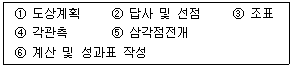
- ① → ② → ③ → ④ → ⑤ → ⑥
- ② → ① → ③ → ⑥ → ⑤ → ④
- ② → ① → ③ → ④ → ⑤ → ⑥
- ① → ② → ③ → ⑤ → ④ → ⑥
(정답률: 알수없음)
28. 다음 도로의 횡단면도에서 AB의 수평거리는?
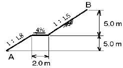
- 8.1m
- 17.5m
- 18.5m
- 19.5m
(정답률: 알수없음)
29. 직접법으로 등고선을 측정하기 위하여 B점에 레벨을 세우고 표고가 75.25m인 P점에 세운 표척을 시준하여 0.85m를 측정했다. 68m인 등고선 위의 점 A를 정하려면 시준하여야 할 표척의 높이는?
- 8.1m
- 5.6m
- 6.7m
- 9.5m
(정답률: 알수없음)
30. 수준측량에서 전시와 후시의 시준거리를 같게 함으로써 소거할 수 있는 오차는?
- 시준축이 기포관축과 평행하지 않기 때문에 발생하는 오차
- 표척 눈금의 오독으로 발생하는 오차
- 표척을 연직방향으로 세우지 않아 발생하는 오차
- 시차에 의해 발생하는 오차
(정답률: 50%)
31. 다음은 수준측량에 관한 설명이다. 틀린 것은?
- 우리나라에서는 인천만의 평균해면을 표고의 기준면으로 하고 있다.
- 수준측량에서 고저의 오차는 거리의 제곱근에 비례한다.
- 중간점이 많을때 편리한 야장기입법은 고차식이다.
- 종단측량은 일반적으로 횡단측량보다 높은 정확도를 요구한다.
(정답률: 알수없음)
32. 삼각형의 내각 α, β, γ를 각각 다른 무게로 측정할 때 각각의 최확치를 구하는 방법 중 가장 옳은 것은?
- 등배분한다.
- 각의 크기에 비례하여 배분한다.
- 무게에 비례하여 배분한다.
- 무게에 반비례하여 배분한다.
(정답률: 알수없음)
33. 완화곡선설치에 관한 다음 설명 중 틀리는 것은?
- 반지름은 무한대로부터 시작하여 점차 감소되고 소요의 원곡선에 연결된다.
- 완화곡선의 접선은 시점에서 직선에 접하고 종점에서 원호에 접한다.
- 완화곡선의 시점에서 칸트는 0이고 소요의 곡선점에 도달하면 어느 높이에 달하고 그 사이의 변화비는 일정하다.
- 완화곡선의 곡률은 곡선의 어느 부분에서도 그 값이 같다.
(정답률: 알수없음)
34. 그림과 같이 0점에서 같은 정도로 각을 관측하여 다음과 같은 결과를 얻었을 때 보정값으로 옳은 것은? (단, x3 - (x1 + x2) = +45")
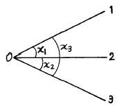
- x1 : - 22.5", x2 : - 22.5", x3 : + 22.5"
- x1 : - 15", x2 : - 15", x3 : + 15"
- x1 : + 22.5", x2 : + 22.5", x3 : - 22.5"
- x1 : + 15", x2 : + 15", x3 : - 15"
(정답률: 알수없음)
35. 수위관측소의 설치장소 선정 중 틀린 것은?
- 수위가 교각이나 기타구조물에 의한 영향을 받지 않는 장소일 것
- 홍수시에도 양수량을 쉽게 볼 수 있을 것
- 잔류, 역류 및 저수가 많은 장소일 것
- 하상과 하안이 안전하고 퇴적이 생기지 않는 장소일 것
(정답률: 알수없음)
36. 다음 중 지구자원탐사위성으로부터 얻어진 영상의 활용분야로 가장 거리가 먼 것은?
- 수자원조사
- 환경오염조사
- 수온의 분포상태
- 두 점간의 정밀한 거리측정
(정답률: 알수없음)
37. 촬영고도 3,000m, 사진 I의 주점기선장 59mm, 사진 II의 주점기선장 61mm 일 때 시차차 2.5mm 인 두 점간의 고저차는 얼마인가?
- 75m
- 100m
- 125m
- 150m
(정답률: 알수없음)
38. 어느 고속도로를 시속 100km/h로 주행하기 위하여 필요로 하는 캔트(cant)는 얼마인가? (단, 곡선반경 : 400m, 궤간 : 15m)
- 2.95m
- 3.54m
- 4.12m
- 5.64m
(정답률: 알수없음)
39. 트래버스측량에서는 측각의 정도와 측거의 정도가 균형을 이루어야 한다. 지금 측거 100m 에 대한 오차가 ± 2㎜일 때 각관측오차는 얼마인가?
- ± 2"
- ± 4"
- ± 6"
- ± 8"
(정답률: 알수없음)
40. 다음 지형측량 방법 중 기준점측량에 해당되지 않는 것은?
- 수준측량
- 트래버스측량
- 삼각측량
- 스타디아측량
(정답률: 알수없음)
3과목: 수리학
41. 다음 중 단위유량도 작성시 필요없는 사항은?
- 직접유출량
- 유효우량의 지속시간
- 투수계수
- 유역면적
(정답률: 알수없음)
42. 모세관 현상에서 모세관고(h)와 관의 지름(D)의 관계는?
- h는 D의 제곱에 비례한다.
- h는 D에 비례한다.
- h는 D-1에 비례한다.
- h는 D-2에 비례한다.
(정답률: 알수없음)
43. 그림과 같이 반지름 R의 원통형 관에 층류로 흐를 때 중 심부에서의 최대유속을 Vc로 하는 경우 평균유속 Vm은?
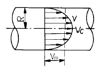
- Vm = (1/2)Vc
- Vm = (1/3)Vc
- Vm = (1/4)Vc
- Vm = (1/5)Vc
(정답률: 알수없음)
44. 사류(射流)의 수심이 0.8m이고 단위폭당 유량이 10m3/sec인 직사각형수로에서 도수가 발생할 때 에너지 손실은?
- 2.54m
- 2.96m
- 3.54m
- 3.88m
(정답률: 알수없음)
45. 지하수의 흐름에 대한 Darcy의 법칙은? (단, v는 지하수의 유속, k는 투수계수, Δh는 길이 Δℓ에 대한 손실수두임)
- v = k(Δh / Δℓ)2
- v = k(Δh / Δℓ)
- v = k(Δh / Δℓ)-1
- v = k(Δh / Δℓ)-2
(정답률: 알수없음)
46. 지름 100㎝의 원형단면 관수로에 물이 만수되어 흐를 때의 동수반경(動水半徑)은?
- 20㎝
- 25㎝
- 50㎝
- 75㎝
(정답률: 알수없음)
47. 어느 하천의 수심이 5m일 때 평균유속을 2점법에 의하여 구하려면 유속계의 위치를 수면에서 각각 어느 위치에 설치해야 하는가?
- 0m, 2.5m
- 1m, 4m
- 2m, 3m
- 0.5m, 4.5m
(정답률: 알수없음)
48. 그림과 같은 두개의 수조를 한변의 길이가 10㎝인 정사각형 단면의 Orifice로 연결하여 물을 유출시킬 때 두 수조의 수면이 같아지려면 얼마의 시간이 걸리는가? (단, C = 0.65이다.)
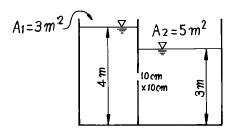
- 130 초
- 120 초
- 115 초
- 110 초
(정답률: 알수없음)
49. 다음 중 깊은 우물(심정호)를 옳게 설명한 것은?
- 집수 깊이가 100m 이상인 우물
- 집수정 바닥이 불투수층까지 도달한 우물
- 집수정 바닥이 불투수층을 통과하여 새로운 대수층에 도달한 우물
- 불투수층에서 50m이상 도달한 우물
(정답률: 알수없음)
50. 다음 중 합리식에 관한 설명으로 틀린 것은?
- 소유역에 적용하는 것이 바람직하다.
- 강우강도는 유출량에 큰 영향이 없다.
- 첨두유량을 구할 수 있다.
- 유출량은 유출계수에 직접적인 관계가 있다.
(정답률: 알수없음)
51. 그림과 같은 수중 오리피스에서 유량 Q를 구하는데 사용되는 수심은?
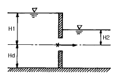
- H1 + Hd
- H1 + Hd - H2
- H1 - H2
- Hd + H2
(정답률: 알수없음)
52. 유속이 5m/sec이고, 압력 P = 5t/m2 일 때 총수두는?
- 5.0m
- 6.28m
- 7.36m
- 8.20m
(정답률: 알수없음)
53. 유역내의 DAD해석이란?
- 우량, 유역면적, 강우 계속 시간과의 관계 해석을 말한다.
- 우량, 유역면적, 강우 강도와의 관계 해석을 말한다.
- 우량, 수위, 유량과의 관계 해석을 말한다.
- 우량, 유출계수, 유역면적과의 관계 해석을 말한다.
(정답률: 알수없음)
54. 일단 물이 토양면을 통해 스며든 후 중력의 영향으로 계속 지하로 이동하여 지하수면까지 도달하게 되는 현상을 무엇이라 하는가?
- 침투
- 침루
- 차단
- 저류
(정답률: 알수없음)
55. 물의 점성계수(粘性係數)에 대한 설명 중 옳은 것은?
- 수온이 높을수록 점성계수는 크다.
- 수온이 낮을수록 점성계수는 크다.
- 4℃에 있어서 점성계수는 가장 크다.
- 수온에는 관계없이 점성계수는 일정하다.
(정답률: 알수없음)
56. 그림과 같은 콘크리이트 케이슨이 바다물에 떠 있을 때 흘수는? (단, 콘크리이트 비중은 2.4이며, 바다물의 비중은 1.025이다.)
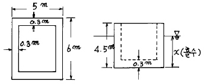
- x = 2.45m
- x = 2.55m
- x = 2.65m
- x = 2.75m
(정답률: 알수없음)
57. 정수압의 성질이 아닌 것은?
- 정수압은 면에 수직으로 작용한다.
- 정수중의 임의의 1점의 수압은 모든 방향에 그 크기가 같다.
- 정수중의 임의의 1점의 수압은 각 방향에 따라 그 크기가 다르다.
- 정지한 물속의 임의의 점의 압력강도는 그 점의 수심과 물의 단위중량의 곱과 같다.
(정답률: 알수없음)
58. 전단응력 및 인장력이 발생하지 않으며 전혀 압축되지도 않고 손실수두(hL)가 0인 유체를 무엇이라 하는가?
- 관성유체
- 완전유체
- 소성유체
- 점성유체
(정답률: 알수없음)
59. 안지름 0.5m, 두께 20㎜의 수압관이 15㎏/㎝2의 압력을 받고 있다. 관벽에 작용되는 인장응력은?
- 46.8㎏/㎝2
- 93.7㎏/㎝2
- 140.6㎏/㎝2
- 187.5㎏/㎝2
(정답률: 알수없음)
60. 이중누가해석(double mass analysis)은 장기간 동안의 강수량자료에 대한 어떤 성질을 검사하기 위하여 가장 필요한가?
- 주기성
- 일관성
- 차별성
- 독립성
(정답률: 알수없음)
4과목: 철근콘크리트 및 강구조
61. fy = 3,500㎏f/㎝2, d = 50㎝ 인 강도설계의 단철근 직사각형 균형보에서 압축연단에서 중립축까지의 거리는?
- 25.8㎝
- 29.1㎝
- 31.6㎝
- 33.2㎝
(정답률: 알수없음)
62. 길이가 3 m인 캔틸레버보의 자중을 포함한 설계하중이 10.0 tonf/m 일 때 위험단면에서 전단 철근이 부담해야할 전단력을 강도 설계법으로 구하면? (단, fck = 240 kgf/cm2, fy = 3,000 kgf/cm2, b = 30 cm, d = 50 cm)
- 12.7 tonf
- 18.9 tonf
- 21.0 tonf
- 25.2 tonf
(정답률: 알수없음)
63. 그림과 같은 연결에서 리벳의 강도는? (단, 허용전단응력은 1300 ㎏f/㎝2, 허용지압응력은 3000 ㎏f/㎝2)
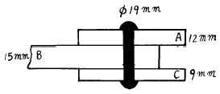
- 7368㎏f
- 8550㎏f
- 7350㎏f
- 8568㎏f
(정답률: 알수없음)
64. 그림과 같은 T형보에 정모멘트가 작용할 때 다음 중 옳은 것은? (단, b = 100 cm, tf = 8 cm, d = 60 cm, bw = 40cm, fck = 210 kgf/cm2, fy = 3000 kgf/cm2, As = 50 cm2)
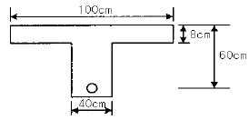
- bw를 폭으로 하는 직사각형보로 취급한다.
- b를 폭으로 하는 직사각형보로 취급한다.
- T형 보로 취급한다.
- a = t 로 보고 공칭모멘트를 계산한다.
(정답률: 알수없음)
65. 강도설계법에서 전단과 휨 만을 받는 부재의 콘크리트가 부담하는 공칭 전단강도는?
- Vc = 0.53 √fck · bw · d
- Vc = 0.75 √fck · bw · d
- Vc = 0.85 √fck · bw · d
- Vc = 1.25 √fck · bw · d
(정답률: 알수없음)
66. 축방향 압축부재로서 띠철근으로 보강된 철근 콘크리트 부재의 강도감소계수 ø 의 값은 얼마인가?(오류 신고가 접수된 문제입니다. 반드시 정답과 해설을 확인하시기 바랍니다.)
- 0.65
- 0.70
- 0.75
- 0.80
(정답률: 알수없음)
67. 단철근 직사각형보를 강도설계법으로 설계할 때 철근비를 최소철근비 이상으로 규정하는 주된 이유는?
- 철근의 압축강도를 확보하기 위해
- 보의 좌굴현상을 막기 위해
- 콘크리트의 취성파괴를 막기 위해
- 콘크리트의 처짐과 균열을 막기 위해
(정답률: 알수없음)
68. 3개의 철근을 묶어 다발로 사용할 경우에 정착길이의 증가량과 B급 이음을 했을 경우의 겹침이음길이가 바르게 묶여진 것은? (단, ℓd는 정착길이)
- 20%, 1.0ℓd
- 33%, 1.3ℓd
- 20%, 1.3ℓd
- 33%, 1.0ℓd
(정답률: 알수없음)
69. 유효깊이 d가 90 cm을 초과하는 깊은 휨부재 복부의 양측면에 부재 축방향으로 배근하는 철근의 명칭은?
- 표면철근
- 배력철근
- 피복철근
- 연결철근
(정답률: 알수없음)
70. 다음 중 PS 강재에 요구되는 성질이 아닌 것은?
- 인장강도가 클 것
- 릴렉세이션이 적을 것
- 취성이 좋을 것
- 응력부식에 대한 저항성이 클 것
(정답률: 알수없음)
71. 그림과 같은 단면에서 최대철근량과 설계 휨강도 φMn은 약 얼마인가? (단, fck=210kgf/cm2, fy=3500kgf/cm2, ø=0.85)
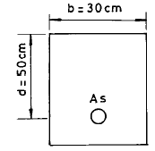
- 32cm2, 49.0 tonf·m
- 42cm2, 37.6 tonf·m
- 32cm2, 37.6 tonf·m
- 42cm2, 49.0 tonf·m
(정답률: 알수없음)
72. 단면 30cm × 40cm 이고, 1.5cm2의 PS강선 4개를 단면 도심축에 배치한 프리텐션 PSC 부재가 있다. 초기 프리스트레스 10000kgf/cm2일 때 콘크리트의 탄성수축에 대한 프리스트레스 손실량은 얼마인가? (단, n=6)
- 250 kgf/cm2
- 300 kgf/cm2
- 350 kgf/cm2
- 400 kgf/cm2
(정답률: 알수없음)
73. 인장부재의 순단면적을 산정할 때의 볼트구멍의 지름은 공칭지름에 얼마를 더한 값으로 계산하는가?
- 1 mm
- 2 mm
- 3 mm
- 4 mm
(정답률: 알수없음)
74. 보를 설계할 때 강도설계법에 대한 기본 가정중 옳지 않은 것은?
- 철근과 콘크리트의 변형율은 중립축으로부터 떨어진 거리에 비례한다.
- 콘크리트 압축연단에서 허용할 수 있는 최대 변형율은 0.003으로 한다.
- 항복강도 fy 이하에서의 철근의 응력은 변형율에 관계없이 fy와 같다.
- 휨응력 계산에서 콘크리트의 인장강도는 무시한다.
(정답률: 알수없음)
75. 띠철근과 나선철근을 두는 주된 이유는?
- 건조수축에 의한 균열을 방지하기 위해서
- 기둥의 강도를 높이기 위해서
- 하중을 고르게 분포시키기 위해서
- 축철근의 위치를 확보하고 좌굴을 방지하기 위해서
(정답률: 알수없음)
76. 보통 골재를 사용한 콘크리트의 압축강도가 300kgf/cm2을 초과할 때 탄성계수를 구하는 식으로 옳은 것은?
- 10,500 √fCK + 70,000
- 10,500 √fCK + 4,270
- 4,270 · WC1.5 √fCK
- 15,000 √fCK
(정답률: 알수없음)
77. 연속보의 한지간에 대한 휨모멘트를 아래 그림에 나타내었다. 지점부와 지간중앙부의 철근 배근 위치가 적당한 것은?
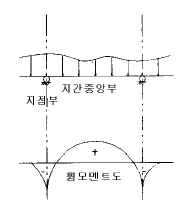
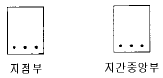
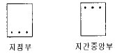
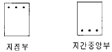
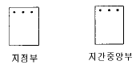
(정답률: 알수없음)
78. PS 강재에서 요구되는 일반 성질 중에서 틀리는 것은?
- 파단시 늘음이 커야 한다.
- 부착강도는 커야 한다.
- 릴렉세이션이 클수록 좋다.
- 항복점 강도는 클수록 좋다.
(정답률: 알수없음)
79. 뒷부벽식 옹벽의 뒷부벽은 어떤보로 보고 설계하는가?
- 직사각형보
- T형보
- 단순보
- 연속보
(정답률: 알수없음)
80. 인장철근이 필요한 휨 부재의 모든 단면은 규정된 최소철근량 이상을 사용해야 하는데, 이 때 해석상 필요한 철근량보다 얼마 이상 철근을 더 배근하면 이들 규정을 적용하지 않아도 되는가?
- 1/3
- 1/4
- 1/5
- 1/6
(정답률: 알수없음)
5과목: 토질 및 기초
81. 아래 그림과 같이 사질토 지반에 타설된 무리마찰말뚝이 있다. 말뚝은 원형이고 직경은 0.4m, 설치간격은 1m이었다. 이 무리말뚝의 효율은 얼마인가?
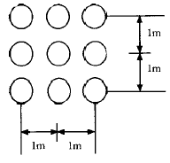
- 55%
- 62%
- 68%
- 75%
(정답률: 알수없음)
82. 다음의 사운딩(Sounding)방법 중에서 동적인 사운딩(Sounding)은?
- 이스키 메타(Iskymeter)
- 베인 전단시험(Vane Shear Test)
- 더취 콘 관입시험(Dutch Cone Penetrometer)
- 표준관입시험(Standard Penetration Test)
(정답률: 알수없음)
83. 어떤 시료를 입도분석한 결과 #200체 통과량이 56%이었고 에터버그 시험결과 액성한계가 40%이었으며 카사그랜드 소성도의 A선위의 구역에 plot되었다면 이 시료는 통일분류법으로 다음 중에 어디에 해당되는가?
- SM
- SC
- CL
- MH
(정답률: 알수없음)
84. 어떤 흙에 대한 일축압축 강도가 1.2㎏/㎝2이었고, 파괴면과 최대 주응력면이 이루는 각을 측정하였더니 45° 였다. 이 흙의 전단강도는?
- 0.25㎏/㎝2
- 0.6㎏/㎝2
- 3.5㎏/㎝2
- 0.35㎏/㎝2
(정답률: 알수없음)
85. 연약 점토의 전단강도를 측정하는 현장 시험 방법은?
- 베인 전단 시험
- 직접 전단 시험
- 오가 보오링
- CBR 시험
(정답률: 알수없음)
86. 그림과 같이 물이 위로 흐르는 경우 Y - Y 단면에서의 유효응력은?
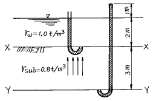
- 3.4t/m2
- 1.4t/m2
- 4.4t/m2
- 2.4t/m2
(정답률: 알수없음)
87. 단위 체적중량 1.8t/m3, 점착력 2.0t/m2, 내부마찰각 0°인 점토지반에 폭 2m, 근입깊이 3m의 연속기초를 설치하였다. 이 기초의 극한 지지력을 Terzaghi 식으로 구한 값은? (단, 지지력 계수 Nc = 5.7, Nr = 0,Nq = 1.0이다.)
- 23.2t/m2
- 16.8t/m2
- 12.7t/m2
- 8.4t/m2
(정답률: 알수없음)
88. 지표가 수평인 연직 옹벽에 있어서 주동토압 계수와 수동토압 계수의 비는? (단, 흙의 내부 마찰각은 30° 이다.)
- 1/3
- 3
- 9
- 1/9
(정답률: 알수없음)
89. 10m × 15m의 장방형 기초위에 q = 6t/m2의 등분포 하중이 작용할 때 지표면 아래 10m에서의 수직응력을 2 : 1 법으로 구한 값은?
- 3t/m2
- 2.4t/m2
- 2.1t/m2
- 1.8t/m2
(정답률: 알수없음)
90. 다짐에너지에 관한 설명 중 옳지 않은 것은?
- 다짐 에너지는 램머의 중량에 비례한다.
- 다짐 에너지는 시료의 체적에 비례한다.
- 다짐 에너지는 램머의 낙하고에 비례한다.
- 다짐 에너지는 타격수에 비례한다.
(정답률: 알수없음)
91. 다음의 흙댐에서 유선망을 작도하는데 있어 경계조건이 틀린 것은?
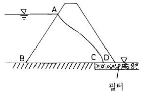
- AB는 등수두선이다.
- BC는 등수두선이다.
- CD는 등수두선이다.
- AD는 유선이다.
(정답률: 알수없음)
92. Boiling 현상은 주로 어떤 지반에 많이 생기는가?
- 모래지반
- 사질점토지반
- 보통토
- 점토질지반
(정답률: 알수없음)
93. 다음 중 사면 안정 해석법과 관계가 없는 것은?
- 비숍(Bishop)의 방법
- 마찰원법
- 펠레니우스(Fellenius)의 방법
- 뷰지네스크(Boussinesq)의 이론
(정답률: 알수없음)
94. 어떤 흙의 습윤단위중량(γt)이 1.852g/cm3이고 함수비(W)가 42%일때 이 흙의 건조단위중량(γd)은 얼마인가?
- 1.304 g/cm3
- 1.351 g/cm3
- 1.417 g/cm3
- 1.454 g/cm3
(정답률: 알수없음)
95. 다음 중 직접기초에 속하지 않는 것은?
- 독립기초
- 복합기초
- 전면기초
- 말뚝기초
(정답률: 알수없음)
96. 내부 마찰각이 26° 인 어떤 흙을 삼축압축시험 했을 때 최소 주응력면과 파괴면이 이루는 각은?
- 32°
- 19°
- 16°
- 8°
(정답률: 알수없음)
97. 평판재하시험에서 침하량 1.25㎜에 해당하는 하중강도가 2.3㎏/㎝2일때 지지력 계수는?
- 15.5㎏/㎝3
- 18.8㎏/㎝3
- 7.8㎏/㎝3
- 5.5㎏/㎝3
(정답률: 알수없음)
98. 두께 6m의 점토층이 있다. 이 점토의 간극비는 eo = 2.0 이고 액성한계는 WL = 70%이다. 지금 압밀하중을 2㎏/㎝2 에서 4㎏/㎝2로 증가시키려고 한다. 예상되는 압밀침하량은? (단, 압축지수 Cc는 Skempton의 식 Cc = 0.009(WL – 10)을 이용할것)
- 0.27m
- 0.33m
- 0.49m
- 0.65m
(정답률: 알수없음)
99. 다음의 연약지반 처리공법에서 일시적인 공법은?
- 웰 포인트 공법
- 치환 공법
- 콤포져 공법
- 샌드 드레인 공법
(정답률: 알수없음)
100. 변수위 투수시험에서 1.25m의 초기수두가 2시간동안 0.5m로 떨어졌다. 이때 stand pipe의 직경은 5mm 이고 시료의 길이는 200mm, 시료의 직경은 100mm 이다. 이 흙의 투수계수는?
- 4.36 × 10-5mm/sec
- 5.63 × 10-5mm/sec
- 6.36 × 10-5mm/sec
- 7.63 × 10-5mm/sec
(정답률: 알수없음)
6과목: 상하수도공학
101. 강우강도 I = 4,000/(t+30) mm/hr, 유역면적 5km2, 유입시간 420초, 유출계수 0.8, 하수관거 길이 1km, 관내유속 1.2m/sec인 경우의 최대우수유출량을 합리식에 의해 구하면?
- 87.3m3/hr
- 873m3/hr
- 87.3m3/sec
- 873m3/sec
(정답률: 알수없음)
102. 일반적인 정수처리 공정순서로 다음 중 옳은 것은?
- 혼화 → 응집 → 침전 → 여과 → 소독
- 혼화 → 침전 → 응집 → 여과 → 소독
- 응집 → 혼화 → 침전 → 여과 → 소독
- 침전 → 응집 → 혼화 → 소독 → 여과
(정답률: 알수없음)
103. 하수종말 처리장에 유입하는 하수 20mL를 채취하여 증류수에 희석하여 300mL로 하였다. 식종은 별도로 하지 아니하였으며 희석 후 시료의 용전산소량은 8.5mg/L 이었고 20℃에서 5일간 배양후 시료내의 용존산소량은 2.8mg/L 이었다. 이 하수의 BOD5는 얼마인가?
- 42.2mg/L
- 85.5mg/L
- 150.4mg/L
- 285.0mg/L
(정답률: 알수없음)
104. 펌프가 공동현상을 일으키지 않고 임펠러로 물을 흡입하는데 필요한 흡입기준면으로부터의 최소한도 수위를 무엇이라 하는가?
- 전양정
- 순양정
- 유효NPSH
- 필요NPSH
(정답률: 알수없음)
1⑤. 스톡스 법칙(Stoke's 법칙)을 이용하여 설계하는 시설은 다음 중 어느 것인가?
- 혼화지
- 응집지
- 여과지
- 침전지
(정답률: 알수없음)
106. 다음 관거별 계획하수량에 대한 사항으로서 틀린 것은?
- 오수관거는 계획시간 최대오수량으로 한다.
- 우수관거는 계획우수량으로 한다.
- 합류식관거는 계획1일 최대오수량에 계획우수량을 합한 것으로 한다.
- 차집관거는 우천시 계획오수량으로 한다.
(정답률: 알수없음)
107. 다음 하수관거 시공중 장애물 횡단방법으로 적합한 것은?
- 등공
- 역사이폰
- 토구
- 맨홀
(정답률: 알수없음)
108. 어느 도시의 총인구가 5만명이고, 급수인구는 4만명일 때 1년간 총급수량이 200만톤 이었다. 이 도시의 급수보급률과 1인 1일 평균급수량은? (순서대로 급수보급률, 1인 1일 평균급수량)
- 8 %, 37 ℓ /인· 일
- 8 %, 137 ℓ /인· 일
- 80 %, 37 ℓ /인· 일
- 80 %, 137 ℓ /인· 일
(정답률: 알수없음)
109. 상수의 정수시에 일반적인 살균방법으로 가장 많이 사용되는 것은?
- 자외선 살균
- 오존 살균
- 염소 소독
- 산소 주입
(정답률: 알수없음)
110. 수도용 구조물의 규모 결정시 사용되는 급수량의 종류 중 연평균 1일 사용 수량에 대하여 비율로 표현할 때 가장 큰 값을 나타내는 것은?
- 1일 최대 급수량
- 시간 최대 급수량
- 1일 최대 평균급수량
- 1일 평균 급수량
(정답률: 알수없음)
111. 펌프에 연결된 관로에서 압력강하에 따른 부압발생을 방지하기 위한 방법이 아닌 것은?
- 펌프 토출측 관로에 조압수조를 설치한다.
- 펌프 토출구 부근에 공기조(air chamber)를 설치한다.
- 펌프에 플라이 휠을 붙여 펌프의 관성을 증가시켜 급격한 압력강하를 완화한다.
- 펌프 토출구에 완폐식 역지밸브를 설치한다.
(정답률: 알수없음)
112. 유량 30,000m3/day, BOD 2ppm인 하천에 배수량 2,000m3/day, BOD 400ppm인 오수를 방류하여 즉시 균등하게 혼합된다면 하천의 BOD는 얼마가 되겠는가?
- 20.5ppm
- 26.9ppm
- 42.3ppm
- 50.4ppm
(정답률: 알수없음)
113. 다음의 사항 중에서 틀린 것은?
- 송수관 내의 평균유속의 최대한도는 모르타르나 콘크리트일 때 3m/s이다.
- 관 내면이 강철이나 주철일 때에는 송수관내의 평균 유속의 최대한도가 6m/s까지 허용된다.
- 평균유속이 높은 경우에는 접합정을 설치하여 감속시킨다.
- 원수를 도수할 경우 부유물이나 미사의 관내침전을 막기위해 최소유속을 0.5m/s로 하고 그 이하로 떨어지면 가압한다.
(정답률: 알수없음)
114. 함수율 98%인 슬러지를 농축하여 함수율 95%로 낮추었다. 이때 슬러지의 부피감소율은?
- 40%
- 50%
- 60%
- 70%
(정답률: 알수없음)
115. BOD 2.5mg/L의 하천수를 취수하여 정수처리할 경우 우선 고려할 수 있는 처리방법은?
- 여과 등에 의한 간이정수처리 후 사용
- 침전여과 등에 의한 일반적 정수처리 후 사용
- 전처리 등을 거친 고도의 정수처리 후 사용
- 특수한 정수처리 후 사용
(정답률: 알수없음)
116. 하수배제방식 중 분류식과 합류식에 관한 설명으로 틀린 것은?
- 합류식이 분류식보다 건설비가 일반적으로 적게든다.
- 분류식이 합류식보다 유속의 변화폭이 크다.
- 합류식은 처리용량 및 펌프의 용량이 일정하지 않다.
- 위생상으로는 분류식이, 경제적인 면에서는 합류식이 우수하다고 할 수 있다.
(정답률: 알수없음)
117. 받이와 하수관거를 연결해서 하수를 본관으로 집수하기 위하여 도로를 횡단하여 매설하는 것은?
- 오수받이
- 우수받이
- 우수유입구
- 연결관
(정답률: 알수없음)
118. 배수관에서 분기하여 각 수요자에게 음용수를 공급하는 것을 목적으로 하는 시설은?
- 취수시설
- 도수시설
- 배수시설
- 급수시설
(정답률: 알수없음)
119. 우수저류지에 대한 설명으로 가장 거리가 먼 것은?
- 우천시 방류 부하량을 줄인다.
- 지상형과 지하형 또는 병설형과 독립형으로 나눈다.
- 하수처리장의 부하농도를 줄이기 위한 것이다.
- 차집관거의 용량보조를 위한 설치한다.
(정답률: 알수없음)
120. 하수도의 기본계획시 조사 항목으로 먼 것은?
- 하수 배제방식
- 하수도 계획구역 및 배수계통
- 토지이용계획과 환경오염 실태조사
- 계획인구 및 오수량조사
(정답률: 알수없음)